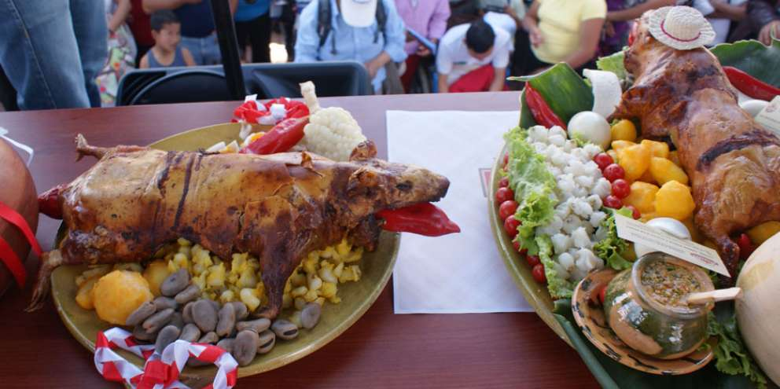
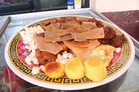
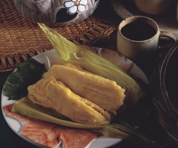
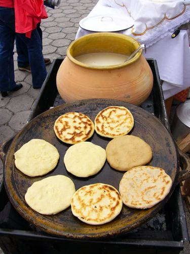

Las comidas Típicas de esta hermosa ciudad son tradicionales y deliciosas a continuación nombraremos algunas:.
Papas con cuy
Se puede saborear en la parroquia Charasol del cantón Azogues, este plata se puede acompañar de papas, ensalada, huevo, arroz. Las personas que visitan nuestra bella ciudad por lo general acuden a cuchilandia, lugar con comida muy buena y sabrosa
Cascaritas de chancho
Este plato es apetecido por propios y extraños, este plato también podemos acompañar con papas, ensalada, llapingachos
Humitas de maíz
Podemos degustar con un delicioso tinto
Tortillas
- Comidas Típicas del Ecuador
- Comidas Típicas de Quito
- Comidas Típicas de Guayaquil
- Comidas Típicas de Cuenca
- Comidas Típicas de Ambato